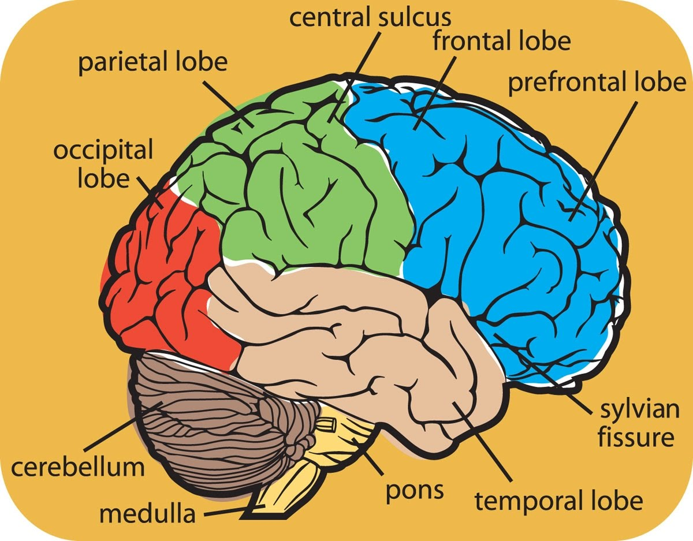

it controls and co-ordinates body movements and posture.
Pituitary Gland:
produces several hormones such as growth and sexual reproduction hormones,
and controls the water balance.
Medulla Oblongata:
relays/transfers information between the spinal cord and brain. It also controls
the heart rate and breathing rate as well as the vital reflexes that co-ordinate
swallowing, salvation, coughing and sneezing.
Meninges:
membranes that line the cranium and covers the brain. It protects the brain
and nourishes the brain tissues. Infection by either a virus or bacterium can cause
the potentially fatal condition known as meningitis.
Cerebral Cortex:
has motor areas to control voluntary movement and sensory areas which interrupt
sensational association areas to link the activity of motor and sensory. The Cortex is
the center of all intelligence, memory, language and consciousness.
Cranium:
is the part of the skull that encloses and protects the brain. It also has a connector
neurone for both accommodation and the pupil reflex of the eye and interrupts impulses
from the optic nerve which is responsible for vision.
Fore Brain:
many emotions originate here, and damage to this area may cause aggression, apathy,
extreme sexual behavior or other emotional disturbances.
Spine:
composed of 33 separate small bones which surround and protect the spinal code. At
each joint between the vertebrae, two spinal nerves carry sensory information, into the
spinal cord of the brain and motor information out of it.
Diagram Showing the Different Lobes

Functions
Frontal Lobe:
The frontal lobe is located at the front of the brain and is associated with reasoning, motor skills, higher
level cognition and expressive language.At the back of the frontal lobe lies the motor cortex.
This area of the brain receives information from various lobes of the brain and uses this
information to carry out body movements. Damage to the frontal lobe can lead to changes in sexual habits,
socialization and attention.
Parietal Lobe:
The parietal lobe is located is middle section of the brain and it is associated with processing of tactile
sensory information such as pressure, touch and pain. A portion of the brain known as the somatosensory cortex
is located in this lobe, which is essential to the processing of body senses. Damage to this lobe can result in
problems with verbal memory, an impaired ability to control eye gaze and problems with language.
Occipital Lobe:
The occipital lobe is located at the back portion of the brain and is associated with interpreting visual stimuli
and information. The primary visual cortex, which receives and interprets information from the rentinas of the
eyes is located in the occipital lobe. Damage to this lobe can cause visual problems such as color blindles,
recognizing words and even objects.
Temporal Lobe:
The temporal lobe is located on the bottom section of the brain. The lobe is also the location of the primary
auditory cortex, which is important for interpreting sounds and language we hear. The hippocampus is also
located in the temporal lobe, which is why this portion of the brain is so heavily associated with the formation
of memories. Damage to this lobe can lead to problems with memory, speech perception, and language skills.